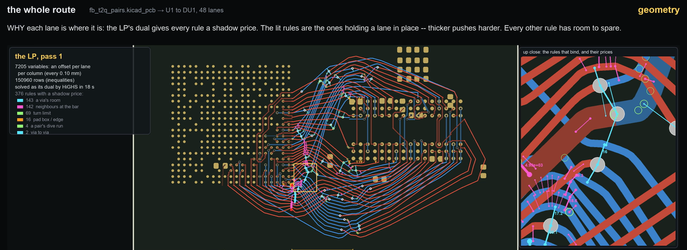

The dual of the geometry LP: shadow prices are forces
whole_geo.py turns the solve's plan into millimetres with one linear program, and HiGHS solves that LP through its dual. This page, a companion to the solvers page, explains what that dual is: as algebra, as physics, as geometry and as a circuit. The primal asks where every lane sits. The dual asks what forces hold each lane there. The two questions have one answer. Every figure below is interactive, and the small models use the same kinds of rows as the real LP.
The words you will meet
- primal
- the LP as written: choose the positions
xthat minimise the costc·xsubject to the rulesA·x ≤ b. - dual
- a second LP built from the same numbers, with one unknown per rule instead of one per position.
- shadow price
- a rule's dual value
y: how fast the cost falls as that rule is loosened, the saving per unit for a small loosening. Its units are cost per millimetre, which for an energy is a force. - binding
- a rule that holds with no room to spare at the optimum. Only binding rules can have a price.
- elastic slack
- a variable that lets a hard rule be broken at a very high price (
W_HARD = 10⁴per mm), so the LP always has an answer and reports where it had to cheat. - complementary slackness
- at the optimum, no rule has both room to spare and a price. A rule with room to spare has price 0, and a rule with a price is binding: a wall pushes only while it is touched.
- convex
- a region is convex when every point between two allowed points is allowed too: no dents, no holes, no separate pieces. An LP's region always is, and everything on this page depends on it (section 2c).
The short answer
Physically, the dual is the statics of the same system. Think of every lane point as a bead that can slide sideways. The costs pull on the beads: each lane is a string held at a fixed tension, which pulls it toward a straight line (in the toys below, a weight pulls each bead toward its preferred spot). The rules are contacts: struts between neighbours, walls at pad boxes and the board edge, pins at the terminals. Once the beads have settled, every contact carries some force. Those forces are the dual's answer, one per rule: its shadow prices. At rest,
- a contact pushes only while it is touched, and never pulls. A wall with room to spare pushes with nothing;
- at every bead the forces cancel;
- no contact carries more than it is rated for (
W_HARDfor a hard rule, the string's tension for length).
The forces tell you where the beads are. The first fact does it. A contact that pushes must be touching, and you know where every contact stands, so each pushing contact puts a bead exactly against it. Start at a wall and follow the pushing contacts, and each one fixes the next bead. Where nothing pushes on a bead, the forces say nothing about where it is. Section 0 works this through with one bead and with two, and section 3a with a real via beside a pad box.
The forces also give the lowest energy, from the forces and the contacts' positions alone, without knowing where any bead is: minus the sum, over the contacts, of each contact's force times the position where it stands (−b·y). Any other set of forces that balances and keeps to the ratings gives a number no larger, so every such set is a guaranteed lower bound on the energy. Structural engineering has the same statement as the static theorem of plastic collapse, and the two were shown to be the same LP duality (Charnes, Lemke and Zienkiewicz 1959).
All of this needs the allowed region to be convex: one piece, with no dents. Then forces that balance mean the best answer overall, not just the best nearby. An LP's region is always convex, and whole_geo keeps the routing problem that way by leaving every either-or choice (the lanes' order, where they cross, which side of each pad box a lane passes) to CP-SAT and to static_sides (section 2c). Section 2b draws all of this as geometry.
0 Reading positions off the forces: one bead, two beads
The whole idea fits on a rail. A bead slides on a rail between two walls, at 0 and at 10, and a weight pulls it left. At rest, the left wall pushes back and the right wall pushes with nothing.
Now suppose you are told only those two forces, and not where the bead is. The left wall is pushing, so the bead must be touching it. The left wall stands at 0, so the bead is at 0. Nobody had to tell you the position: the forces say which contacts touch, and the contacts' own positions say where.
Add a second bead and a spacer that keeps the two at least 2 apart, and pull both left. At rest the left wall pushes on A, and the spacer pushes the two apart. Told only that, you reason in a chain. The left wall pushes, so A is at 0. The spacer pushes, so it is squeezed to its shortest, and B is at 0 + 2 = 2. The geometry LP works the same way: its pitch rules and via rooms are spacers, and its pad boxes and board edge are walls.
Set the pulls with the sliders or the buttons (a negative pull is to the left). The page finds where the beads settle and the force in every contact. The log then does the reasoning above from the forces alone, and checks it against where the beads settled.
Try this
- Pulled apart: each bead goes to its own wall. Both walls push, the spacer has room to spare and pushes with nothing, and each position is read off its own wall.
- Nothing pulls A: B goes to the right wall, and nothing touches A. Every force on A is zero, so the forces cannot say where it is. Every A from 0 to 8 is equally good (the shaded band).
- Pulls cancel: the spacer pushes, so B is exactly 2 past A, but no wall pushes, so nothing fixes where the pair sits. The forces have one answer and the positions have many. This is the tie in section 3's first preset.
When it does not work. A bead with no force on it is not held by any contact, so the forces cannot place it, and in an LP that means many positions are equally good. The positions then have to come from somewhere else. In whole_geo that is a tiny tie-break added to the cost (detmath.lp_tie_break), which makes one of those positions the answer, the same one on every machine.
1 The primal and the dual, written out
This section is the algebra behind the short answer. Sections 0 and 2 show the same things without it. For an LP whose unknowns are free (a lane's offset can go either way):
primal minimise c·x subject to A·x ≤ b (one row per rule) dual maximise −b·y subject to Aᵀ·y = −c, y ≥ 0 (one price per rule)
Everything in one problem has a partner in the other:
| Primal | Dual | Physical reading |
|---|---|---|
a variable x_j (a lane's offset at one column) | a constraint: row j of Aᵀy = −c | the balance of forces at that bead |
a rule, row i of A·x ≤ b | a variable y_i ≥ 0 | the force in that contact; it can push, never pull |
the rule's limit b_i | its weight in the dual objective | where the contact stands |
the cost c_j | the balance's right-hand side | the applied force on bead j is −c_j |
| a free variable | an equality | a bead free to move must be in exact balance |
a variable ≥ 0 with cost c_j | an inequality: −(Aᵀy)_j ≤ c_j | a bead resting on a floor at 0, which takes up any leftover push. For a helper variable (a slack, a length, a bend) this reads as a cap: the rules through it carry at most c_j in total |
| a rule with room to spare | y_i = 0 | a wall you are not touching pushes with nothing |
Where the dual comes from, in four lines
Attach a multiplier y_i ≥ 0 to each rule and form the Lagrangian L(x, y) = c·x + y·(A·x − b). For any feasible x the bracket is ≤ 0, so L ≤ c·x. Minimising L over a free x gives a finite answer only if c + Aᵀy = 0, and then the answer is −b·y. So for every y ≥ 0 with Aᵀy = −c and every feasible x: −b·y = min L ≤ L(x, y) ≤ c·x. That is weak duality. For a linear program the best such y reaches the optimum exactly: strong duality.
Read physically: y·(A·x − b) is minus each contact's force times its gap (the gap is b − A·x), and c + Aᵀy = 0 says the applied forces and the contact forces cancel at every bead.
2 The picture physicists use: a heavy ball in a box
With two unknowns, every rule is a straight wall and together they fence in a polygon. Let the cost be height: gravity pulls a ball with force f = −c, and it rolls to the lowest point, a corner. Each wall it touches pushes back along its inward normal with some force y_i. The ball is at rest, so
f − Σ y_i · a_i = 0 that is Aᵀy = −c (a_i = wall i's outward normal)
which is the dual constraint, word for word. A wall can push but cannot pull, so y_i ≥ 0. A wall the ball does not touch pushes with nothing: complementary slackness. And the ball's energy c·x equals −b·y, computed from the forces and the wall positions alone.
Drag anywhere in the box (or use the slider) to point gravity. Click a wall, then move it out with the second slider: the energy changes by the wall's force times the distance, which is what a shadow price is. Under the box, the same box is drawn with the potential energy as height: the cost tilts the floor into a tray, the rules are its fences, and gravity points straight down.
Try this
- Turn gravity slowly. The ball stays in one corner, and the forces shift between its two walls, until gravity crosses a wall's normal. Then the ball jumps to the next corner.
- Point gravity straight through a wall, perpendicular to it (the edge between two slices of the dial). The ball can rest anywhere along that wall: many optima. The force is still well defined, and one wall carries all of it.
- Select a wall the ball is not touching and move it. Nothing changes: its price is 0.
- Select a touching wall and move it out a little. The energy falls by
y·δ. Move it far enough and the ball switches corners, and the prediction stops holding.
2b The same thing, geometrically
The purple shapes in the figure are the dual drawn as geometry. Four facts, each visible above:
- The normal cone. At each corner, the outward normals of the two walls that meet there span a wedge (shaded purple at the ball). The ball rests at a corner exactly when gravity points into that corner's wedge. The dual values are gravity's coordinates along the wedge's two edges: the purple parallelogram splits
fintoy₁a₁ + y₂a₂. Because the coordinates are taken inside the wedge, they come out non-negative. That is dual feasibility, and using only the corner's own walls is complementary slackness. - A floor built from walls. Multiply each wall's inequality
a_i·x ≤ b_iby itsy_iand add them. The result,(Σ y_i a_i)·x ≤ Σ y_i b_i, is a new valid wall, and becauseΣ y_i a_i = fit lies perpendicular to gravity: the dashed purple line. Every point of the box is above it, so the energy is at least−b·yeverywhere. That is weak duality as a picture: any non-negative mix of walls whose normals add up tofis a floor under the box. The dual looks for the highest such floor, and the highest one touches the box at the ball. That is strong duality. - The normal fan. The wedges of all the corners tile the circle of directions (the dial at the bottom right). Turning gravity walks the pointer from slice to slice, and the ball from corner to corner. On a boundary between two slices, gravity is perpendicular to a wall and a whole side is optimal. The real LP has ties like that, so
whole_geoadds a tiny tie-break to the cost (detmath.lp_tie_break), which turns every side into a single corner so every machine gets the same answer. - Farkas' lemma. At any corner, exactly one of two things is true. Either
flies in the corner's wedge (and theyvalues are a certificate that nothing lower exists), or some edge leaving the corner goes downhill (and the corner is not optimal). Never both, never neither. That lemma (Farkas 1902) is what LP duality rests on, and it is also the simplex method's stopping rule.
2c Why the region must be convex
A region is convex when every point between two allowed points is allowed too: no dents, no holes, no separate pieces. An LP's region is always convex. Every rule is a straight wall that says "stay on this side of this line", and if two points are on the right side of every wall, so is everything between them. The ball's box above is convex, which is why the ball, rolling downhill, always finds the lowest corner.
The routing problem is not convex by nature. A lane passing a pad box can go below it or above it, and those are two separate pieces: between a position below the box and one above it lies the box itself. In the figure a lane is pulled toward its straight line (energy = distance from it, so the curve is a V), and a pad box stands in the way.
Move the lane's straight line with the slider and watch the rest points. Then choose a side, as static_sides does: the region becomes one piece, with one rest point.
Why the forces need it. With both sides allowed the lane has two places to rest, one against each side of the box. At each, the string pulls toward the line and the box pushes back: the forces balance, and every wall that pushes is touching. Both pass every test in the short answer, and only one of them is the lowest. From the other, every small move goes into the box or further from the line, so no force points toward the better answer on the far side. In a region that is not convex, forces that balance mean only "best nearby".
The dual's guarantee fails the same way. Its lower bound is a floor built by adding walls together (2b). The wall "stay below the box" is false for every position above the box, so a floor built from it is not under those positions: the dashed line in the figure, which the other pocket dips below. In one convex piece there is one pocket, and forces that balance mean the best answer overall.
How whole_geo keeps its region convex. An LP cannot say "below or above". It can only say "stay on this side of this line". So every either-or choice is made before the LP runs:
- CP-SAT chooses the order of the lanes at every column, where each pair crosses, and where along its route each lane changes layer (its vias);
static_sideschooses which side of each pad box or island each lane passes, from the first pass's answer, so "not inside the box" becomes one wall, such as "stay above its top";- the bounds: at a column the free space between pad boxes can be several separate intervals, and
whole_geokeeps one of them for each lane.
After those choices every rule is one straight wall, and the region is one convex piece. That is why the work is split between two solvers: CP-SAT makes the either-or choices, and the LP does the rest. It is also why a bad choice costs so much. Once a side is chosen, the LP finds the best answer on that side and never looks at the other (in the figure, choose the worse side and see what the other would have cost). If a side has no room at all, the loop flips it for the next round (the negotiation on the solvers page).
The costs must be convex too: bowl-shaped, with a slope that only grows as a lane moves away. The length cost G·(√(1+k²) − 1) is a bowl, which is why tangent cuts can stand in for it: a bowl is the highest of its tangent lines. The comfort cost is made steeper below the midpoint pitch (a millimetre there costs four times one above it), so it stays a bowl. A cost that got cheaper per millimetre the further a lane moved would make pockets of its own.
3 The toy: two lanes in one column
Two lanes, a and b, run on the same layer through one column of the route. Each has a preferred offset, its reference r. Moving lane a costs w_a per mm and lane b w_b per mm. The rule: b sits at least a pitch P above a. Walls (a pad box, the board edge) are optional.
As mechanics, it is section 0's rail with grooves. Two beads sit on a rail, each held toward its reference by a constant force w. Off its reference the bead is pulled back with exactly w; sitting on it, it can resist any force up to w, like a bead in a V-shaped groove. A strut of length P sits between the beads, and its compression is y. The rule is elastic: breaking it costs W per mm, so the strut carries at most W and then yields.
Drag the references (the grey markers under the rail) and change the sliders. The page solves the LP exactly and draws the forces on each lane below the rail. The cost C and the dual value D are always equal.
Who pays, and why that sets the price. The rule needs g mm more room than the references give. Three sources can supply it: moving lane a (w_a per mm, until its wall), moving lane b (w_b per mm, until its wall), or breaking the rule (W per mm, without limit). The LP takes the cheapest first. The shadow price y is the unit price of the last source it had to use, because that is what one more millimetre of pitch would cost. In the mechanics the same thing reads: the weaker pull gives way first; once a bead reaches a wall, the wall takes up the extra force; when both walls hold, the only thing left to give is the strut, which yields at its rated force W.
Reading the positions off the forces, as in section 0. Press Unequal pulls: lane a pulls with 1 and lane b with 2.5, and the strut force comes out y = 1.
- The strut pushes, so it is squeezed to its length:
o_b − o_a = 0.3. - Lane b feels 1, less than its pull of 2.5, so it has not left its groove:
o_b = r_b = 0.1. - So
o_a = 0.1 − 0.3 = −0.2. Lane a feels exactly its full pull, so it has left its groove, and its own forces do not say where it is. The strut does.
With The toy preset the two pulls are equal, both lanes leave their grooves, and only the strut's equation is left: one equation for two positions. A whole range of splits is then optimal, the case in section 0 where the forces cannot place the beads (3b shows it as a side of the diamond).
The toy's LP and its dual, written out
minimise w_a·|o_a − r_a| + w_b·|o_b − r_b| + W·e
subject to o_a − o_b − e ≤ −P the pitch rule, elastic: breaking it by e costs W per mm
o_a ≥ L, o_b ≤ U the walls, when present
e ≥ 0
(An absolute value is linear inside an LP by the usual trick: a helper d ≥ o − r, d ≥ r − o, cost w·d.) Attaching y to the pitch rule, u_a and u_b to the walls, and minimising the Lagrangian term by term gives the dual:
maximise y·g − u_a·(r_a − L) − u_b·(U − r_b) g = P − (r_b − r_a), the room the rule needs
subject to 0 ≤ y ≤ W from e: the strut is rated for W; past that it yields
|y − u_a| ≤ w_a lane a: strut y down, wall u_a up; its pull covers the rest (at most w_a)
|u_b − y| ≤ w_b lane b: the same, mirrored
u_a, u_b ≥ 0 walls push, never pull
3a The toy at a real column: one via beside a pad box
The toy is more than a toy. Take a column of the real LP where a lane dives through a via. Before the LP runs, CP-SAT has already decided the lanes' order, where each pair crosses, and where along its route each via sits. The LP moves none of that. It only slides lanes sideways across the channel, so for a via it decides how far sideways the via sits, and how far its neighbours move to give it room. At the via's column that is the toy exactly:
- lane a is the lane with the via, and lane b is its neighbour;
- the strut is the via's room: every neighbour stays at least that far from the via (about 0.32 mm for a single lane on the H3-to-DDR3 bench);
- wall L is a pad box, grown by the via's clearance, so 0 is as close to it as the via may stand;
- each lane is pulled toward its straight line, its reference.
Press A via beside a pad box in the toy above. Lane a's line runs at 0.05 and lane b's at 0.2, and b pulls twice as hard as a. At rest two contacts push: the pad box on lane a, and the via's room between the lanes. Told only that, you read the positions off in a chain. The pad box pushes, so the via is against it, at 0. The via's room pushes, so lane b is exactly one room away, at 0.32. The via ends up against the pad box, and lane b is bent out around it by exactly the via's room.
Press The via does not fit: a second pad box stands at 0.30 (wall U). Lane b would have to be at 0.32 or more for the via's room and at 0.30 or less for the pad box. Every contact in the chain pushes as hard as it can, and the via's room gives way by 0.02 mm, at its cap W (10⁴ in whole_geo). whole_geo reports the broken row and sends it back to CP-SAT as a cut: this via cannot have its room here, so plan something else. In the K51 table of section 5, 143 of the 376 rules that carry a force are this kind: a via's room pushing a neighbour.
The real rule is checked at every column within the via's reach, shrinking like a circle away from it and corrected for slope, against the two nearest lanes on each side and the nearest on each layer. At the via's own column it is this strut.
3b Both sides of the toy: the primal plane and the dual line
The same toy, drawn twice. Left, the primal: every point of the plane is a pair of offsets (o_a, o_b). The green region is what the rules allow. The cost is a pyramid with its tip at the references, so its level sets are diamonds with half-widths C/w_a and C/w_b. When the rule can hold at all, the optimum is where the smallest diamond first touches the green region. Right, the dual: pick any strut force y. If both lanes can balance it, D(y) is a guaranteed floor under the cost of every position. The curve never rises above the dashed line C (weak duality), and its peak touches it (strong duality).
Below both, the potential energy. Only one number matters to the toy's energy: the separation s = o_b − o_a, because for any separation the lanes split the move the cheapest way. The energy has two parts. The lanes' energy is a valley with its bottom at the references' own separation; it gets steeper when a lane reaches its wall, and goes vertical when both have. The rule's energy is zero above P and a ramp of slope W below it: an elastic rule is a steep wall, not a vertical one. The toy rests at the bottom of their sum. There the slope of the lanes' energy is the force in the strut, F = dV/ds (at a kink, any value between the two slopes). The dual appears on this plot too: lay a line of slope y under the lanes' energy, touching it, and it crosses s = P at height D(y). As y rises, that crossing rises until the line touches the curve at the rest point, and then falls again. Its highest value is C. In symbols, D(y) = y·P − L*(y), where L* is the Legendre transform (the convex conjugate) of the lanes' energy L.
What to look for
- The toy preset:
w_a = w_b, so the diamond's side is parallel to the rule's line and a whole segment touches. Every split of the move is optimal, and the dual still has one answer,y = 1. The tie shows in the primal, as a whole side of the diamond lying on the rule's line, but not in the dual, whose peak is a single point. - Unequal pulls: now a corner of the diamond touches, the cheap lane moves and the other stays. The dual's peak sits at
y = min(w_a, w_b). - Lane a against a wall: the allowed region gets a vertical side. The dual curve gets a kink at
y = w_a, where the wall starts helping lane a. - The rule cannot hold: the green region shrinks to nothing inside the walls. The optimum sits past the rule's line, the slack is paid, and the dual's peak moves to
y = W: a broken rule is a price at its cap.
4 Many lanes, many columns: the forces in a small geometry LP
Now the same kinds of rows as whole_geo, at small scale. Three lanes on one layer cross nine columns, pinned at both ends, and pass an island (a pad box) on sides you choose. The rows are the pitch between neighbours (hard, elastic), the island and the board edge (hard, elastic), the pins at the terminals, the length by tangent cuts (cost 1 per mm of extra length: a string with tension up to 1), and bends (cost 0.25 per mm of kink here, light enough that the string's tension shows; whole_geo uses 3 on its 0.1 mm columns). A small simplex in the page solves it and also returns every row's price. Struts are drawn for the rows with a price, thicker for larger forces: magenta for pitch, orange for the island and the board edge. The length and bend forces are not drawn. Click any lane point to list every force on it; they add up to zero.
One thing the table shows that a real string would not: the tangent cuts turn the string's smooth sideways pull into steps. A nearly straight segment pulls with nothing at all, because a small sideways move adds almost no length (about k²/2 per column for slope k), and the pull jumps to 0.119, 0.287, 0.573 and 0.832 as the slope passes each cut. whole_geo's length term behaves the same way.
Try this
- Click lane 2 at column 3, where it turns up onto the island. The island's clearance pushes it up, the lane above presses down on it through the pitch strut, and the length and bend rows pull it back toward a straight line. They cancel.
- Lower the board height to 1.8 mm, where the two upper lanes no longer fit. The LP breaks the cheapest rule it can (here the island's clearance, by 0.1 mm, drawn dashed), and the whole stack carries the cap force
W_HARD(100 in this toy so it fits the scale;10⁴in the real one): the board edge presses on the top lane, the pitch strut passes the force down, and the island pushes back, like books squeezed on a shelf. Only the rule whose slack was paid is broken; the others are at the cap because they carry its load.whole_geosends the broken rows to CP-SAT as cuts. - Click lane 1 at column 1, on its nearly straight run. Nothing acts on it: its slope is below the first tangent cut, so the string pulls with nothing there.
5 The real dual, in whole_geo.py
The primal that build_and_solve writes down:
variables o offset of each lane at each column (every 0.1 mm) bounded: board, pad boxes, reference interval
d extra length of one column's sideways move cost W_LEN = 1
d2 a bend cost W_BEND = 3
c pitch short of comfortable (two lane pitches) cost W_COMF·G
e elastic slack on every hard rule cost W_HARD = 10⁴
rows A·x ≤ b pitch, slope, turn, via room, via to via, island side, ... (hard rules carry −e)
tangent cuts (t/r)·(o[k+1] − o[k]) − d ≤ −G·(1/r − 1), r = √(1 + t²)
And its dual, one price per row and one push per finite bound:
variables y_r ≥ 0 one per row 150,960 at K51
u_j, w_j ≥ 0 one per finite lower / upper bound of an offset the walls' pushes
for each offset o_j: Σ_r A_rj·y_r − u_j + w_j = −c_j ≈ 0 balance: the bead is free, so the forces cancel
for each slack e_r: y_r ≤ 10⁴ a hard rule's rated force
for each length d: Σ_tangents y ≤ 1 the string's tension
for each bend d2: Σ y ≤ 3 a hinge's yield moment
maximise −b·y + lo·u − hi·w
Every piece of section 3 is here at full size. Only the rows that bind can carry a price, and at K51 that is a tiny fraction of them:
| K51, geometry pass 1 | count |
|---|---|
| offsets (variables) | 7,205 |
| rows (inequalities) | 150,960 |
| rules with a shadow price | 376 |
| a via's room | 143 |
| neighbours at the bar (pitch) | 142 |
| turn limit | 69 |
| pad box or board edge | 16 |
| a pair's dive run | 4 |
| via to via | 2 |
| solved as its dual by HiGHS in | 18 s |
That is 0.25% of the rules. The other 150,584 push with nothing, and most of them have room to spare. The 376 that push are the contacts that are touching. Together with the pins at the lanes' ends and the strings between them, they hold every lane where it is: as in section 0, each pushing contact holds its lanes exactly at its limit, against a pad box, a via's room or a neighbour. (Geometrically, the optimum is a corner of a polytope in thousands of dimensions, and the downhill direction −c lies in the cone of those walls' outward normals, together with the bounds', exactly as in the ball's wedge.)
A rule whose elastic slack was paid (the rule broke) has its price at the cap 10⁴. The converse does not hold: other rules can sit at the cap because they carry the broken rule's load, as the squeezed stack in section 4 shows. The broken rows are the ones whole_geo writes as cuts for CP-SAT (the islands a lane could not be kept off, the changes it could not give their room).

whole_movie.py reads these prices straight from the dual that HiGHS solves.Why whole_geo solves the dual itself
lp_by_dual (in whole_geo.py) does not solve the primal and read the prices off. It builds the dual explicitly and hands that to HiGHS:
AT = (−A.T) A_ub = AT[plain] the caps: one per cost-carrying helper (y ≤ 10⁴, Σ y ≤ 1, Σ y ≤ 3, ...) A_eq = [AT[bj], U, W] the balances: one per bounded offset, with the walls' pushes u and w linprog(b, lo, hi terms, A_ub, A_eq, method='highs-ipm') interior point, capped at 500 iterations x = −marginals the offsets come back as the multipliers of the balance equations
- It is faster. The primal has many more rows than columns, and every elastic slack becomes a one-entry inequality in the dual. SciPy's
highs-ipm, which runs IPX, one of HiGHS's interior point solvers (Schork and Gondzio 2020), takes the dual form about six times faster: 31 s instead of 188 s on K51's pass 2. - The positions come back in the same answer.
lp_by_dualnever works the positions out from the forces as a second step. When HiGHS solves any LP, it returns an answer and a multiplier for every constraint. The dual's constraints are the balance equations, one per lane point, and the dual of the dual is the primal, so their multipliers are the lane offsets. Why a balance equation's multiplier is a position: a multiplier says how fast the optimum moves when its constraint's right-hand side moves, and the right-hand side of a balance is the load on that point. Push a lane point toward larger offsets with a small extra forceδ, and the lowest energy falls byδtimes the point's offset, the work the extra force does. So a position is how the energy answers a change of load, just as a force (a shadow price) is how the energy answers a moved wall. The minus inx = −marginalsis SciPy's sign: it minimisesb·y, the dual value with its sign flipped. - It has a fallback. If the interior point does not finish (zynq K18's pass 2 once ran for half an hour), the same dual goes to HiGHS's dual simplex (Huangfu and Hall 2018), and
detmath.lp_roundrounds the result so every machine gets the same offsets.
6 The physics behind it
None of this is an analogy invented for the page. Each item below is the same mathematics under a physicist's name.
Lagrange multipliers are constraint forces
When a system minimises its potential energy subject to constraints, the multipliers on the constraints are the reaction forces the constraints exert: the normal force of a floor, the tension in a rod (Lagrange 1788). The optimality conditions of an LP, the Karush–Kuhn–Tucker conditions (Karush 1939) (Kuhn and Tucker 1951) (Cottle 2012), are exactly equilibrium plus contact.
Complementary slackness is the contact law
In contact mechanics (Signorini's problem (Signorini 1933) (Signorini 1959)): the gap is at least zero, the contact force is at least zero, and their product is zero. A wall pushes only while it is touched; a rope pulls only while it is taut. The LP says the same about a rule's room and its price, and that is what lets the forces place the beads (section 0).
Linear costs are constant forces
A dead weight has energy m·g·h, linear in height, so it pulls with a constant force. A string held at fixed tension T by a weight over a pulley has energy T × length. The length term W_LEN × length is such a string with tension 1, and in the dual the tangent cuts' prices add up to at most 1: the string's tension, pulling sideways with about T·sinθ, in steps, one per tangent cut (section 4).
An absolute value holds like friction
A cost w·|o − r| is a V-shaped groove. Away from the bottom it pulls with exactly w. At the bottom it can supply any force up to w, like static friction holding a block until the load exceeds its limit. That is why a lane at its reference can take a strut force smaller than w without moving.
Elastic rules are rigid-plastic members
A hard rule with an elastic slack behaves like a strut of a rigid, perfectly plastic material: it carries any force up to its rating W_HARD and then yields, and yielding is paying the slack. The bend term, cost 3 × |kink|, is a plastic hinge with yield moment 3: its energy is the moment times the rotation (the kink, a second difference of offsets, stands in for the rotation).
Plastic limit analysis is an LP pair
The collapse load of a rigid-plastic structure has two theorems. The static theorem: any set of forces that balances the load and nowhere exceeds yield gives a load the structure can certainly carry (a lower bound). The kinematic theorem: any collapse mechanism gives an upper bound. They meet at the collapse load (Greenberg and Prager 1952) (Drucker, Prager and Greenberg 1952). Charnes and Greenberg wrote the static problem for frames as a linear program in 1951 (Charnes and Greenberg 1951), and Charnes, Lemke and Zienkiewicz showed in 1959 that the two theorems are a dual pair of LPs (Charnes, Lemke and Zienkiewicz 1959); see also (Dorn and Greenberg 1957). The same kind of LP later laid out optimal trusses (Dorn, Gomory and Greenberg 1964). Section 3b's curve is the static theorem for the toy.
The positions are virtual displacements
The principle of virtual work (Lagrange 1788) says a set of forces is in equilibrium exactly when it does zero work in every small displacement the constraints allow. In the dual, the balance equations are the equilibrium, and their multipliers are the positions (x = −marginals). Plainly: push a bead with a small extra force, and the lowest energy falls by that force times the bead's position (section 5). Strong duality, c·x = −b·y, is the work bookkeeping that closes.
Potential and complementary energy
Elasticity has two minimum principles for one equilibrium: displacements minimise the potential energy, and stresses minimise the complementary energy, and at the solution the two are equal and opposite. They are linked by a Legendre transform (Fenchel 1949) (Rockafellar 1970). The primal and dual of an LP are the same pair for rigid contacts and constant loads.
Economists read the same numbers as prices: the value of one more unit of a scarce resource. Kantorovich's 1939 "resolving multipliers" are these prices (Kantorovich 1939/1960), the theory grew up in the Cowles Commission's activity analysis (Koopmans 1951), the first published proof of the duality theorem is Gale, Kuhn and Tucker's (Gale, Kuhn and Tucker 1951), and the standard account is Dantzig's (Dantzig 1963). The units make the link to physics. A shadow price here is cost per millimetre, and cost is an energy, so a shadow price is an energy per length: a force.
6b Where physicists use the dual
The dual is not only a way to understand an LP. At the research frontier physicists solve the dual in place of the primal, either because it is easier or because it gives what the primal cannot: a proof. Three situations make the dual the better route:
- the rules far outnumber the unknowns, so the dual is the smaller problem (
whole_geo's own reason, section 5); - you want a bound you can trust, not only a good answer: any set of forces that balances is a floor under every possible position (section 3b);
- the primal is infinite but a certificate is finite: one set of forces can rule out every position at once.
And section 0's move comes back again and again: the primal answer is read off the dual one, because only the contacts that push are touching.
The conformal bootstrap
At a critical point a theory is fixed by its spectrum of operators, and consistency (crossing symmetry and unitarity) limits which spectra are possible. The primal question, "is there a consistent theory with this spectrum?", ranges over infinitely many operators. The dual asks for one linear functional that proves there is not, and that is a finite LP (Rattazzi, Rychkov, Tonni and Vichi 2008), later a semidefinite program (Simmons-Duffin 2015). This is how the 3D Ising model was located (El-Showk et al. 2012), and its critical exponents are now known more precisely this way than by any other method (Poland, Rychkov and Vichi 2019) (Chang et al. 2025). At the edge of the allowed region, the zeros of the best functional are the operator dimensions (El-Showk and Paulos 2013): the primal answer read off the dual, as the beads' positions are read off the pushing contacts in section 0.
The S-matrix bootstrap
The same idea for scattering amplitudes. The primal builds amplitudes that obey unitarity and crossing, and pushes a coupling as high as it will go. The dual gives rigorous bounds that no amplitude can pass. Run both, and they bracket the answer from the two sides until they meet (Guerrieri, Homrich and Vieira 2020), as the curve D(y) rises to the line C in section 3b.
Jamming: the struts are real
Is a packing of hard spheres jammed, or can some of them still move? Donev, Torquato, Stillinger and Connelly test it with an LP (2004). The primal looks for a motion of the spheres that frees the packing. In its dual the unknowns are the forces between touching spheres, which push and never pull: this page's struts, literally. The two readings meet. A packing that no motion can free is one whose contacts can carry any load.
Ground states, bounded from below
Variational methods (DMRG, variational Monte Carlo) only give an upper bound on a ground-state energy, since every trial state costs at least the true minimum. Semidefinite relaxations give a lower bound, so the true energy is caught between the two: for molecules in a finite basis, through the two-electron reduced density matrix (Mazziotti 2004); for matrix quantum mechanics, by bootstrapping (Han, Hartnoll and Kruthoff 2020); for lattice models, through a renormalization-group relaxation (Kull, Schuch, Dive and Navascués 2024). A certified lower bound needs a feasible point of the dual program: a floor, as in section 3b.
Quantum correlations
Which correlations can quantum mechanics produce? The NPA hierarchy bounds the set from outside with semidefinite programs (Navascués, Pironio and Acín 2007). When a correlation falls outside, a feasible point of the dual is the proof, and it reads as a Bell inequality that the correlation violates (Navascués, Pironio and Acín 2008): a certificate, not only a verdict.
Sphere packing
Cohn and Elkies turned the densest packing of spheres into an LP bound. Any function that is never positive past a radius, and whose Fourier transform is never negative, caps the density (Cohn and Elkies 2003). Such a function is a dual certificate. Viazovska's proof that the E8 lattice is the densest packing in 8 dimensions is the construction of the one certificate that meets the bound exactly (Viazovska 2017).
The early universe by optimal transport
Where did today's galaxies start? If the displacement of matter is the gradient of a convex potential, as in the Zel'dovich approximation, the map from initial to present positions is an optimal transport with a quadratic cost, and on a sample of points it is an assignment problem, an LP. Frisch et al. solved it with a dual simplex method (Frisch et al. 2002), and Brenier et al. with Bertsekas's auction algorithm (Brenier et al. 2003), whose bids set one price per point: Kantorovich's potentials, the economists' prices above.
Random-field magnets by max-flow
The ground state of the random-field Ising model is a minimum cut in a network, and it is found exactly as a maximum flow (Ogielski 1986). Maximum flow and minimum cut are an LP pair: the flow is the dual, and the edges it fills to capacity are the cut.
Where the dual is the physics itself. In these the dual variable is not a device for solving. It is a quantity physicists measure.
Pressure is the price of volume
In an incompressible fluid, pressure is the Lagrange multiplier that enforces the constraint of constant volume: the shadow price of volume. Brenier's dual least action problem for an ideal fluid makes this exact (Brenier 1993).
Temperature is the price of energy
Maximise entropy at a fixed mean energy and particle number, and the multipliers that appear are 1/T and −μ/T (Jaynes 1957). The free energies are Legendre transforms of the energy or the entropy: the same transform that makes section 3b's D(y).
Density functional theory
Lieb wrote density functional theory as a convex duality: the universal functional of the density and the ground-state energy as a function of the external potential are Legendre transforms of each other, so the potential is the dual variable of the density (Lieb 1983). Finding the potential that produces a given density is solving that dual (Wu and Yang 2003).
7 The same LP as an electrical circuit
There is an electrical version of all of this, and it is old. Jack Dennis showed that a network of ideal diodes and sources (with resistors added for a quadratic program) has a DC operating point that solves a linear program and its dual together (Dennis 1959). In his construction the program's variables are diode currents and the dual's are node voltages. The circuit below is that construction applied to this page's force LP: the forces are the diode currents, and the node voltages come out as the positions. In the mapping below, positions become node voltages and forces become branch currents: force is a "through" quantity like current, and position an "across" quantity like voltage.
| LP / mechanics | Circuit |
|---|---|
a lane offset o_j | the voltage of node j |
a pitch rule o_b − o_a ≥ P | an ideal diode in series with a battery of P volts between the two nodes |
its shadow price y (the strut force) | the current through that branch |
y ≥ 0: a push, never a pull | a diode conducts one way only |
| complementary slackness | the diode law: current flows only while the diode is forward-biased, holding exactly P; with room to spare it is reverse-biased and carries none |
balance at each bead, Aᵀy = −c | Kirchhoff's current law at each node |
a wall o ≥ L | a diode to a rail held at L volts |
w·|o − r|, the groove that holds like friction | a two-way current limiter to a rail at r: it holds the node at r for any current up to w, and passes exactly w once the node is pulled away |
the elastic cap W on a hard rule | a current limiter in the rule's branch: past W amps it can no longer hold the voltage, and the rule breaks |
the cost C | the power the limiters burn |
the dual value D = −b·y | the power the batteries and rails deliver |
strong duality, C = D | power balance: Tellegen's theorem (Tellegen 1952) |
The two-lane toy of section 3, wired up (1 mm of offset is 1 volt, a force of 1 is 1 amp). It shares that section's settings, so the buttons and sliders here change both. Wires that carry current are drawn flowing; a blocking diode carries none.
Why the power balances. Tellegen's theorem says that on any network, any branch currents that satisfy Kirchhoff's current law and any branch voltages that satisfy his voltage law are orthogonal: the sum over all branches of voltage times current is zero, even when the two do not come from the same operating point (Tellegen 1952). At the operating point it says the power balances. Ideal diodes burn nothing (no voltage while they conduct, no current while they block), so everything the sources deliver is burned in the limiters. The limiters' burn is the LP's cost, term by term, and the sources' delivery is the dual objective, term by term. So Tellegen's theorem, applied to the operating point, is strong duality.
With springs instead of constant pulls, the circuit is made of resistors. A quadratic cost is a spring, and its circuit element is a resistor. The extremum principle is then Maxwell's minimum-heat theorem: in a network of resistors with no electromotive forces inside it, the currents Ohm's law gives generate less heat than any other distribution with the same currents in and out (Maxwell 1873, Art. 284). Millar gave the general version for nonlinear resistive elements, the "content" and "co-content" (Millar 1951), Duffin showed that networks of monotone conductors settle at the minimum of a convex potential (Duffin 1947), Minty proved existence and uniqueness for networks of monotone resistors from convex extremum principles and tied them to optimisation problems outside electrical engineering (Minty 1960), and Rockafellar's book develops flows and potentials in duality for network optimisation (Rockafellar 1984). An LP is the limit where every element is an ideal diode, a source or a limiter.
People built these. Circuits that solve an optimisation problem by settling to equilibrium were a line of research in the 1980s: a canonical circuit built from the Kuhn–Tucker conditions, which solves nonlinear programs (Chua and Lin 1984); a linear programming circuit from the Hopfield network school (Tank and Hopfield 1986); the paper that showed those two are the same circuit, and pointed out and corrected an error in the Tank–Hopfield design (Kennedy and Chua 1987); and a stability analysis of such networks for nonlinear programs (Kennedy and Chua 1988). None of them scaled to an LP of 150,960 rows, but the equations they settle are the ones on this page.
References
- Y. Brenier, "The dual least action problem for an ideal, incompressible fluid," Archive for Rational Mechanics and Analysis 122(4):323–351, 1993. doi:10.1007/BF00375139 — the pressure as the Lagrange multiplier of incompressibility.
- Y. Brenier, U. Frisch, M. Hénon, G. Loeper, S. Matarrese, R. Mohayaee and A. Sobolevskiĭ, "Reconstruction of the early Universe as a convex optimization problem," Monthly Notices of the Royal Astronomical Society 346(2):501–524, 2003. doi:10.1046/j.1365-2966.2003.07106.x — the reconstruction as an assignment problem, solved with Bertsekas’s auction algorithm.
- C.-H. Chang, V. Dommes, R. S. Erramilli, A. Homrich, P. Kravchuk, A. Liu, M. S. Mitchell, D. Poland and D. Simmons-Duffin, "Bootstrapping the 3d Ising stress tensor," Journal of High Energy Physics 2025(3):136, 2025. doi:10.1007/JHEP03(2025)136 — the 3D Ising critical exponents to date.
- A. Charnes and H. J. Greenberg, "Plastic collapse and linear programming. Preliminary report," abstract 506, Bulletin of the American Mathematical Society 57(6):480, 1951 (in J. W. T. Youngs, "The summer meeting in Minneapolis"). doi:10.1090/S0002-9904-1951-09546-4 — the static problem of plastic collapse, for frames, as a linear program.
- A. Charnes, C. E. Lemke and O. C. Zienkiewicz, "Virtual work, linear programming and plastic limit analysis," Proceedings of the Royal Society A 251(1264):110–116, 1959. doi:10.1098/rspa.1959.0094 — the static and kinematic collapse theorems as a dual pair of linear programs.
- L. O. Chua and G.-N. Lin, "Nonlinear programming without computation," IEEE Transactions on Circuits and Systems 31(2):182–188, 1984. doi:10.1109/TCS.1984.1085482 — a circuit, built from the Kuhn–Tucker conditions, whose node voltages solve a nonlinear program.
- H. Cohn and N. Elkies, "New upper bounds on sphere packings I," Annals of Mathematics 157(2):689–714, 2003. doi:10.4007/annals.2003.157.689 — the linear programming bound for sphere packing.
- R. W. Cottle, "William Karush and the KKT theorem," Documenta Mathematica, Extra Volume ISMP, 255–269, 2012. — the history of the Karush–Kuhn–Tucker conditions.
- G. B. Dantzig, Linear Programming and Extensions, Princeton University Press, 1963. doi:10.1515/9781400884179 — the simplex method and LP duality.
- J. B. Dennis, Mathematical Programming and Electrical Networks, Technology Press of the Massachusetts Institute of Technology, 1959 (from his 1958 MIT Sc.D. thesis). — linear and quadratic programs, and their duals, as the DC operating point of networks of diodes, sources and resistors.
- A. Donev, S. Torquato, F. H. Stillinger and R. Connelly, "A linear programming algorithm to test for jamming in hard-sphere packings," Journal of Computational Physics 197(1):139–166, 2004. doi:10.1016/j.jcp.2003.11.022 — jamming as an LP, whose dual variables are the contact forces.
- W. S. Dorn and H. J. Greenberg, "Linear programming and plastic limit analysis of structures," Quarterly of Applied Mathematics 15(2):155–167, 1957. doi:10.1090/qam/92465 — limit analysis of structures by linear programming.
- W. S. Dorn, R. E. Gomory and H. J. Greenberg, "Automatic design of optimal structures," Journal de Mécanique 3:25–52, 1964. — truss layout as a linear program (the ground structure).
- D. C. Drucker, W. Prager and H. J. Greenberg, "Extended limit design theorems for continuous media," Quarterly of Applied Mathematics 9(4):381–389, 1952. doi:10.1090/qam/45573 — the lower- and upper-bound theorems for any perfectly plastic body.
- R. J. Duffin, "Nonlinear networks. IIa," Bulletin of the American Mathematical Society 53(10):963–971, 1947. doi:10.1090/S0002-9904-1947-08917-5 — networks of monotone conductors settle at the minimum of a convex potential.
- S. El-Showk, M. F. Paulos, D. Poland, S. Rychkov, D. Simmons-Duffin and A. Vichi, "Solving the 3D Ising model with the conformal bootstrap," Physical Review D 86(2):025022, 2012. doi:10.1103/PhysRevD.86.025022 — the 3D Ising model located by the numerical bootstrap.
- S. El-Showk and M. F. Paulos, "Bootstrapping conformal field theories with the extremal functional method," Physical Review Letters 111(24):241601, 2013. doi:10.1103/PhysRevLett.111.241601 — the spectrum read off the zeros of the optimal functional.
- J. Farkas, "Theorie der einfachen Ungleichungen," Journal für die reine und angewandte Mathematik 124:1–27, 1902. doi:10.1515/crll.1902.124.1 — Farkas’ lemma.
- W. Fenchel, "On conjugate convex functions," Canadian Journal of Mathematics 1(1):73–77, 1949. doi:10.4153/CJM-1949-007-x — the convex conjugate (the Legendre–Fenchel transform).
- U. Frisch, S. Matarrese, R. Mohayaee and A. Sobolevski, "A reconstruction of the initial conditions of the Universe by optimal mass transportation," Nature 417(6886):260–262, 2002. doi:10.1038/417260a — the early Universe reconstructed by optimal transport.
- D. Gale, H. W. Kuhn and A. W. Tucker, "Linear programming and the theory of games," in T. C. Koopmans (ed.), Activity Analysis of Production and Allocation, Wiley, 1951, pp. 317–329. — the first published proof of the LP duality theorem.
- H. J. Greenberg and W. Prager, "Limit design of beams and frames," Transactions of the American Society of Civil Engineers 117(1):447–458, 1952. doi:10.1061/TACEAT.0006679 — the static and kinematic theorems of limit design.
- A. Guerrieri, A. Homrich and P. Vieira, "Dual S-matrix bootstrap. Part I. 2D theory," Journal of High Energy Physics 2020(11):084, 2020. doi:10.1007/JHEP11(2020)084 — rigorous bounds from the dual, meeting the primal’s.
- X. Han, S. A. Hartnoll and J. Kruthoff, "Bootstrapping matrix quantum mechanics," Physical Review Letters 125(4):041601, 2020. doi:10.1103/PhysRevLett.125.041601 — energies bounded by positivity, a bootstrap for quantum mechanics.
- Q. Huangfu and J. A. J. Hall, "Parallelizing the dual revised simplex method," Mathematical Programming Computation 10(1):119–142, 2018. doi:10.1007/s12532-017-0130-5 — the dual simplex solver in HiGHS.
- E. T. Jaynes, "Information theory and statistical mechanics," Physical Review 106(4):620–630, 1957. doi:10.1103/PhysRev.106.620 — maximum entropy, with temperature and chemical potential as its multipliers.
- L. V. Kantorovich, "Mathematical methods of organizing and planning production," Management Science 6(4):366–422, 1960 (translation of the 1939 Leningrad booklet). doi:10.1287/mnsc.6.4.366 — "resolving multipliers": the dual variables as prices.
- W. Karush, "Minima of functions of several variables with inequalities as side conditions," Master’s thesis, Department of Mathematics, University of Chicago, 1939. — the optimality conditions with inequality constraints.
- M. P. Kennedy and L. O. Chua, "Unifying the Tank and Hopfield linear programming circuit and the canonical nonlinear programming circuit of Chua and Lin," IEEE Transactions on Circuits and Systems 34(2):210–214, 1987. doi:10.1109/TCS.1987.1086095 — the two circuits as one, and an error in the Tank–Hopfield design corrected.
- M. P. Kennedy and L. O. Chua, "Neural networks for nonlinear programming," IEEE Transactions on Circuits and Systems 35(5):554–562, 1988. doi:10.1109/31.1783 — stability of optimisation circuits for nonlinear programs.
- T. C. Koopmans (ed.), Activity Analysis of Production and Allocation, Cowles Commission Monograph 13, Wiley, 1951. — the volume where linear programming and its duality theory were set out.
- H. W. Kuhn and A. W. Tucker, "Nonlinear programming," in J. Neyman (ed.), Proceedings of the Second Berkeley Symposium on Mathematical Statistics and Probability, University of California Press, 1951, pp. 481–492. doi:10.1525/9780520411586-036 — the Kuhn–Tucker conditions.
- I. Kull, N. Schuch, B. Dive and M. Navascués, "Lower bounds on ground-state energies of local Hamiltonians through the renormalization group," Physical Review X 14(2):021008, 2024. doi:10.1103/PhysRevX.14.021008 — certified lower bounds for lattice models.
- J.-L. Lagrange, Méchanique analitique, Paris: Veuve Desaint, 1788. doi:10.5479/sil.322586.39088000898585 — virtual work, and multipliers as the forces of constraint.
- E. H. Lieb, "Density functionals for Coulomb systems," International Journal of Quantum Chemistry 24(3):243–277, 1983. doi:10.1002/qua.560240302 — density functional theory as a convex (Legendre) duality.
- J. C. Maxwell, A Treatise on Electricity and Magnetism, Vol. I, Oxford: Clarendon Press, 1873, Art. 284. — the minimum-heat theorem for resistor networks.
- D. A. Mazziotti, "Realization of quantum chemistry without wave functions through first-order semidefinite programming," Physical Review Letters 93(21):213001, 2004. doi:10.1103/PhysRevLett.93.213001 — ground-state energies from a semidefinite relaxation, a lower bound in a finite basis.
- W. Millar, "Some general theorems for non-linear systems possessing resistance," Philosophical Magazine (Series 7) 42(333):1150–1160, 1951. doi:10.1080/14786445108561361 — content and co-content.
- G. J. Minty, "Monotone networks," Proceedings of the Royal Society A 257(1289):194–212, 1960. doi:10.1098/rspa.1960.0144 — existence and uniqueness for networks of monotone resistors, from convex extremum principles.
- M. Navascués, S. Pironio and A. Acín, "Bounding the set of quantum correlations," Physical Review Letters 98(1):010401, 2007. doi:10.1103/PhysRevLett.98.010401 — the NPA hierarchy of semidefinite programs.
- M. Navascués, S. Pironio and A. Acín, "A convergent hierarchy of semidefinite programs characterizing the set of quantum correlations," New Journal of Physics 10(7):073013, 2008. doi:10.1088/1367-2630/10/7/073013 — a dual feasible point as a Bell inequality the correlation violates.
- A. T. Ogielski, "Integer optimization and zero-temperature fixed point in Ising random-field systems," Physical Review Letters 57:1251–1254, 1986. doi:10.1103/PhysRevLett.57.1251 — random-field Ising ground states by maximum flow.
- D. Poland, S. Rychkov and A. Vichi, "The conformal bootstrap: Theory, numerical techniques, and applications," Reviews of Modern Physics 91(1):015002, 2019. doi:10.1103/RevModPhys.91.015002 — the review of the numerical bootstrap.
- R. Rattazzi, V. S. Rychkov, E. Tonni and A. Vichi, "Bounding scalar operator dimensions in 4D CFT," Journal of High Energy Physics 2008(12):031, 2008. doi:10.1088/1126-6708/2008/12/031 — the first numerical bootstrap, as a linear program.
- R. T. Rockafellar, Convex Analysis, Princeton University Press, 1970. doi:10.1515/9781400873173 — conjugate duality.
- R. T. Rockafellar, Network Flows and Monotropic Optimization, Wiley-Interscience, 1984 (reprinted Athena Scientific, 1998). — flows and potentials in duality, as in electrical networks.
- L. Schork and J. Gondzio, "Implementation of an interior point method with basis preconditioning," Mathematical Programming Computation 12(4):603–635, 2020. doi:10.1007/s12532-020-00181-8 — IPX, one of HiGHS’s interior point solvers.
- A. Signorini, "Sopra alcune questioni di elastostatica," Atti della Società Italiana per il Progresso delle Scienze 21(II):143–148, 1933. — the first short statement of the unilateral contact problem.
- A. Signorini, "Questioni di elasticità non linearizzata e semilinearizzata," Rendiconti di Matematica e delle sue Applicazioni (5) 18:95–139, 1959. — the Signorini contact conditions in full.
- D. Simmons-Duffin, "A semidefinite program solver for the conformal bootstrap," Journal of High Energy Physics 2015(6):174, 2015. doi:10.1007/JHEP06(2015)174 — SDPB, the bootstrap as a semidefinite program.
- D. W. Tank and J. J. Hopfield, "Simple ‘neural’ optimization networks: An A/D converter, signal decision circuit, and a linear programming circuit," IEEE Transactions on Circuits and Systems 33(5):533–541, 1986. doi:10.1109/TCS.1986.1085953 — an analog circuit that solves a linear program by settling.
- B. D. H. Tellegen, "A general network theorem, with applications," Philips Research Reports 7:259–269, 1952. — Tellegen’s theorem.
- M. S. Viazovska, "The sphere packing problem in dimension 8," Annals of Mathematics 185(3):991–1015, 2017. doi:10.4007/annals.2017.185.3.7 — the optimal certificate for 8 dimensions: E8 is the densest packing.
- Q. Wu and W. Yang, "A direct optimization method for calculating density functionals and exchange–correlation potentials from electron densities," Journal of Chemical Physics 118(6):2498–2509, 2003. doi:10.1063/1.1535422 — the potential from a density, by solving Lieb’s dual.